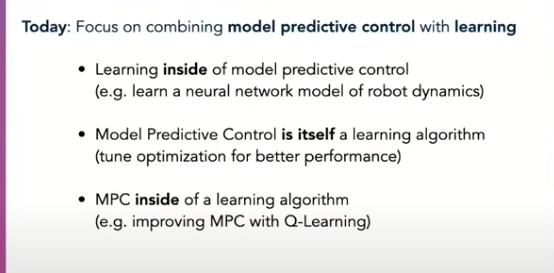
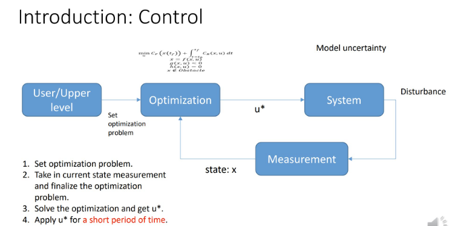
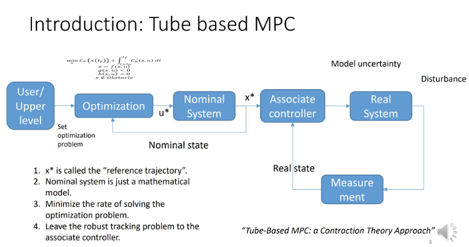
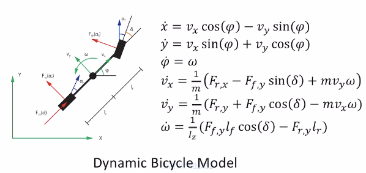

Introduction
MPC控制算法是工业控制、自动驾驶、及机器人、航空航天等多个领域都有广泛应用的算法， 相比于PID算法， 其功能更加强大且能够处理多输入多输出系统(PID如果有多个输出则需要多路PID通道)。MPC全称叫做Model Predict Control(模型预测控制)。顾名思义， 这是一种利用模型来预测未来一段时间内的状态， 然后综合未来状态作为反馈计算当前时刻的控制输出。
当前研究趋势

Core Concept
MPC这个名称并没有反应它的一个特点， 那就是MPC是一种最优控制方法。 所谓最优控制就是对一个控制系统设计一个代价函数(即对系统表现的期望， 例如能量损耗最小， 平滑性好， 误差最小等等)，然后将代价函数求最小值的问题转化为QP问题(最小二乘)， 然后利用数值优化技术(凸优化， 整数规划等)求解。 MPC还有一个特点在它的名字里面没有体现， 即滚动控制(Receding Horizon Control, 或者叫做滚动最优控制)的思想， 即在任一时刻， MPC都会根据模型预测优化未来一段时间的状态， 但是只选取最近的控制输入进行实施(因为模型是有误差的， 距离当前时间越远的预测与系统真实的响应差距越大)。从这个角度来说， MPC优化的是系统的平均表现。
- 需要对系统进行建模(状态转移方程)， 通常需要离散化以便在计算平台上实施
- 本质是求解QP问题, 计算比较耗时， 对平台的计算能力要求较高。
- 由于本质是求解QP问题， 可以在计算的同时施加约束constraints。
- MPC即可以作为规划器，也可以作为控制器
MPC主要步骤
![MPC steps][mpc1.png]
图片来源: Dr_can
- 对系统进行建模(应用MPC的前提条件)
- 在K时刻， 估计/测量当前系统状态(估计一般使用卡尔曼滤波或设计观测器)
- 基于未来的控制序列和代价函数来进行最优化求解
- 只取施加到系统， 并在下一时刻回到第1步滚动计算(receding horizon control)
MPC分类
- 线性MPC
- 非线性MPC
- Explicit MPC(离线MPC)
- tubeMPC
- MPCC
- Data-driven MPC
系统框图
- 原始MPC

- Tube-base MPC
Tube MPC的主要思想是优化求解的输出不直接作用于真实系统，而是作用于我们建立的数学模型(这样就没有真实世界的干扰， 及模型误差)。而且求解的速度可以不要求很高(因为不直接作用于系统)， Associate controller是一个基于系统状态误差的控制器(比如PID)， 它的求解速度可以很快， 同时可以处理真实系统的不确定性。

Tube-Based MPC: a Contraction theory approach
- 事件驱动MPC
相关工具
- acado, 可以代码生成
- Yane, 可以解非线性MPC
- Multi-parametric tool-box
- osqp
- sqp
- particle swarn optimation(无需知道梯度信息)
MPC求解的稳定性分析
软约束与硬约束
- 系统状态x一般设计为软约束
- 系统输入u一般设计为硬约束
- 松弛量的设计
MPC原理推导(以车辆运动模型为例)
运动模型建模
考虑如下车辆运动模型：
该运动模型推导参见多车辆运动学公式推导。其中为车辆速度(矢量，未必为车头方向)， 为车辆纵向加速度，为转弯的角速度， 为前轮转角， 为车辆航向角。 上式中选取后轮轮轴中心，作为车辆坐标原点。 若以车辆重心为坐标原点，则其运动方程如下(该模型适应高速场景)：
其中为重心处的速度与车辆纵轴的的夹角, 为汽车重心到后轮的距离， 为汽车重心到前轮的距离。
- 动力学模型(参考)

运动模型线性化
定义系统状态, 控制向量为。 则上面运动方程可以写为(分子布局， 矩阵求导的行数与分子维度相同)：
其中
其实这里有个疑问：是否需要C这个余项。由于我们并不是在零点进行展开的， 所以有一个常数项， 如果是零点展开或者为扰动的形式， 那么应该就没有常数项了
运动状态方程离散化
采用前向欧拉法对上述线性方程进行离散化。(??)
问题一：是否意味着输入的trajectory上的点也是时间均匀的 solution 1: 将路径点上的速度设置为相同（比如1m/s） solution 2: 在路径点上带上时间点信息(这样就知道dt了, 或者按照dt进行采样) 问题二： 线性化传递函数离线性化点越远，则偏差越大此时A矩阵是否为变值(不是) 问题三: 采用运动状态作为线性化点还是参考线上的点(在路径优化中通常为后者, MPC中通常是前者(warm-start))
离散化方法
- 前向欧拉法
- 后向欧拉法
- 双向欧拉法
- 龙格-库塔方法
状态矩阵的增广形式
优化目标函数推导
形式一(Condensed Format)
定义未来p个周期(预测步长)内预测的系统状态为：
定义到达未来p个周期内预测的系统输入为：
则由上述离散状态转移方程可以写出未来p个状态的状态转移方程：
将上式写为矩阵形式(其中为初值， 为已知量)：
定义预定的控制目标(步长为p)为：
这里的为路径点，需要根据采样周期dt进行采样。 定义优化目标代价函数为：
将上面的的状态转移方程带入上式，整理得以下二次型：
其中：
上式可调用线性求解器进行求解析解:
- 前提是H矩阵可逆 ，不可逆的情况下可以使用数值方法求其近似解(可以看出， 当前的控制输入是当前状态的全状态反馈， 这种情况下MPC等价于LQR只是求解方式不同, LQR是通过DP动态规划递推得到)
- 这个方法也可以处理有等式约束的情形(拉格朗日乘数法)
- 如果约束为不等式， 可以调用qp求解器(osqp等)
- 在形式一中只有u为决策变量
- 在不考虑约束的情况下是否可以直接求解其解析解
形式二(Non-Condensed Format), 构造法
参考
- MPC cast to osqp
- osqp求解器 该形式直接利用进行构造，容易实现。下面简要描述构造过程： OSQP求解器求解的是一类QPs(quadratic programs)问题(本质问题是最小二乘的求解),其形式如下：
其中为优化变量， 为半正定矩阵 ， 为约束矩阵。 而上述MPC的通常代价函数为：
如果考虑也可以将中的, 为上一步的控制序列的求解结果，当做已知量即可以根据后文很方便地进行构造，为了说明的方便此处省略该项的代价。
其中为终端约束(terminal constraint)， 通常是为了让求解结果收敛到优化目标; 为过程约束(stage constraint), 其维度为4x4; 为对控制量及控制量变化的约束其维度为2x2; 为预测步长; 为控制步长; 为初始状态。
注意： 形式二中的代价函数将作为求解器要优化的变量，而形式一则只优化序列。
构造代价函数为OSQP求解形式
下面将上述优化目标及其约束构造为式(1)要求的形式(为了理解方便，后面的矩阵都将注释维度, x维度假定为4x1, u维度假定为2x1): 构造矩阵,式(2)中可以展开并忽略常数项可以整理为如下形式： 设
上面的式子便为osqp求解器要求的形式。
约束矩阵的构建
事实上，约束矩阵即为(2)式中的约束条件的矩阵表达，其中值得注意的是其中等式约束的表达也采用了不等式的形式:
构造的约束矩阵, 如下:
形式二上在实现上比较简单， 直接把数据准备好交给求解器就好了。但是由于其维度比形式一大了很多， 所以其求解稳定性没有形式一好。而且理论上形式一的矩阵系数可以部分提前计算， 所以实时性及稳定性上要优于形式二（也不一定， 稀疏矩阵也具有性能优势） 形式二中把x, u统一作为求解变量(决策变量)
优化目标求解
- 对于形式一，可以利用线性求解器求得解析解或近似解。
- 对于形式二， 可以利用QP(Quadratic Programming)问题求解器求最优解（本质为凸优化问题）
- 还可以用非线性求解器(eg. ipopt)直接对未离散形式直接求解
遗留问题
- MPCC
- deepMPC
其他考虑因素
- 系统延时补偿
- 定位精度与定位频率
- 追踪路径是否平滑
- 在嵌入式设备上使用可以利用代码生成实现高实时
- 如果状态量不可测得，则需要利用卡尔曼滤波进行估计
- 对于差速小车而言，由于其转弯半径可以接近0，需要考虑圆弧运动限制:
- 在我们的例子中， 对于非线性模型进行了线性化处理， 然后利用凸优化求解线性MPC问题， 另一种思路是利用非线性MPC对该模型直接求解详见非线性MPC
- 加快求解速度: Warm-start, 离线MPC